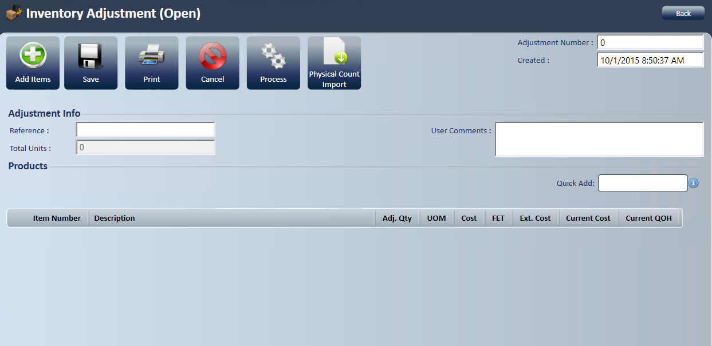
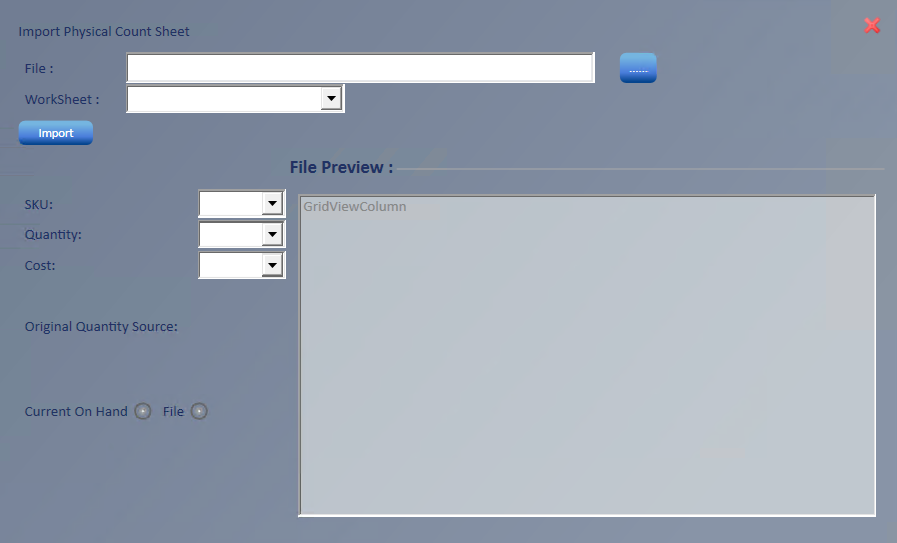

Inventory Adjustment
Use an inventory adjustment to adjust inventory for items you add from a search, enter with Quick Add, or import from a spreadsheet.
Create an inventory adjustment
- Go to New; Inventory Adjustment.

- Enter the reference information. This field is required.
- Enter any User Comments.
- Total Units keeps a running total as you enter items.
- Add the items to adjust, using the method that fits the task:
- Add Items
 : Enter items through the tire search screen.
: Enter items through the tire search screen. - Quick Add: Enter items here if you know the item number.
- Separate the SKU, quantity and cost with commas
 . The whole line fills in at once, and you return to Quick Add, ready to add the next item.
. The whole line fills in at once, and you return to Quick Add, ready to add the next item.
- Separate the SKU, quantity and cost with commas
- Import
 : Import items from a spreadsheet. A dialog box opens for you to fill in.
: Import items from a spreadsheet. A dialog box opens for you to fill in.
- Add Items

-
-
- Select the ellipsis (...) and choose the spreadsheet file to load.
- Select the worksheet to use from the Worksheet dropdown.
- Select the Sku column header to use from the preview.
- Select the quantity column header, typically the count column.
- Select the cost column, typically the average cost column.
- Set Original Qty. Source to on hand or file.
- If you select File, choose the column to use, typically the QOH column.
- Select Import.
- The items fill in on the inventory adjustment.
- Verify the total adjustment quantity in TWHD matches the total quantity in the loading document.
-
- Select Save
 to assign an Adjustment ID.
to assign an Adjustment ID. - Select Process
 .
.
- A dialog box confirms the adjustment processed successfully.
- Select Print if you want.
Delete or comment on a line
- Delete a line: Hover to the left of the item number and select the minus sign.
- Add a line comment: Hover to the left of the item number and select the comment icon.
Import Costs
Use Import Costs to update costs, quantities, reorder points and price bases for existing items from an Excel spreadsheet. It doesn't create new items.
Before you start: Requires the Inventory - Import Costs access right.
- Go to Manage; Utilities; Import Costs.
- In Excel File, select ... and choose the file, then pick the WorkSheet.
- In Map on, choose Manufacturer Sku or Universal Sku, then pick the Location(s) and Sub Manufacturer.
- Under Map Inventory Columns, pick the spreadsheet column for each value to update, for example Invoice, Average, Last, FET, Qnty On Hand, Min ReOrder Qnty and Max ReOrder Qnty. Under Map Price Bases, pick columns for any price bases to update.
- Select LookUp Items to see how many items match, then select Import.
- Confirm the matching item count and the prompt that the import is long running.
- A message shows how many items were updated.